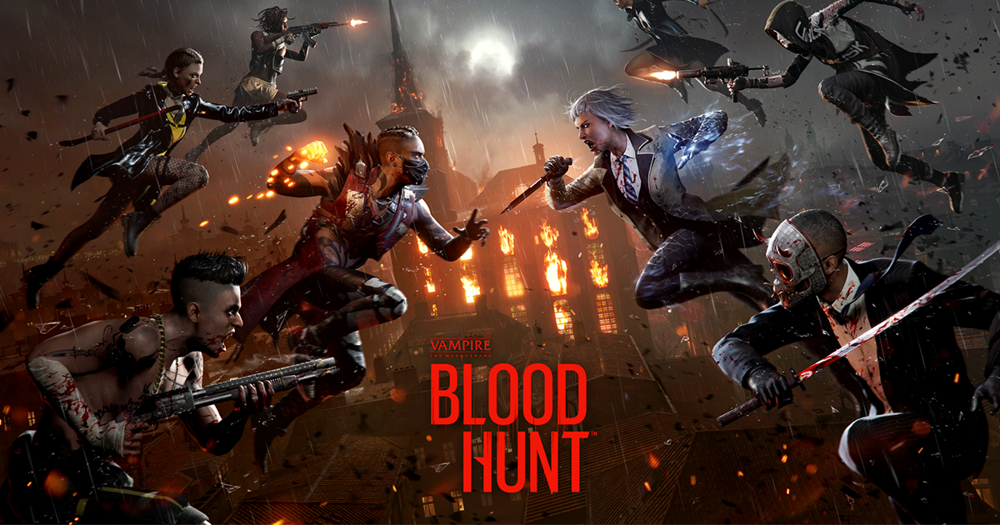
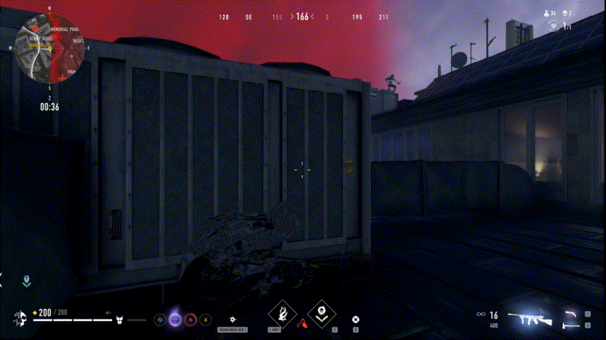
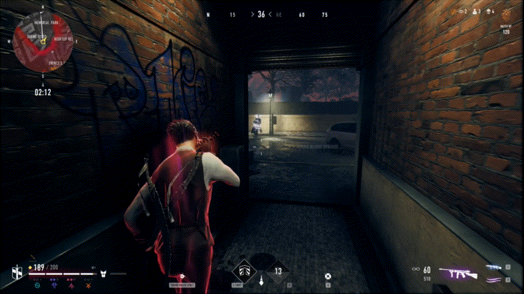
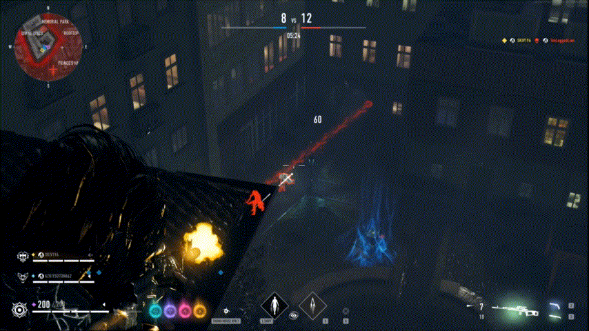
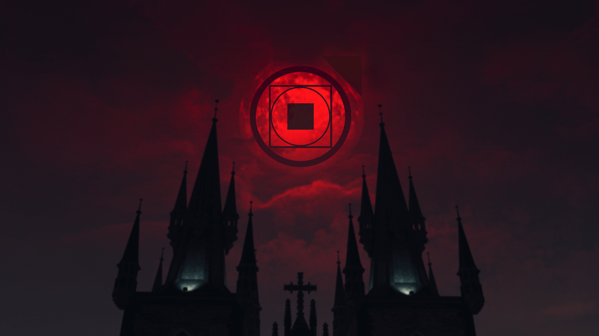

Vampire the Masquerade: Bloodhunt
The first AAA game I worked on. A third-person shooter battle royal with vampires.
Introduction
I started working on Bloodhunt at Sharkmob as an intern in 2019 (got hired a year later) and worked on that project until 2023 when further development on it stopped.
This was my first work experience in the games industry and I look back at it very fondly.
During that time I worked on most parts of the game and experienced three stages of development for a live service game:
Pre launch iterative development with many big changes to the game, post launch seasonal development with hotfixes and increased pace, and ramp down wrap up development with a very small team and many things we wanted to do.
It goes without saying that I learned a lot during this time in all aspects of AAA game development.

Abilities
The thing I worked on most and later were responsible for, was the abilities and the ability system.
When I joined all abilities in the game were about to be reworked and I was one of the two programmers that were assigned to it.
I had to work a lot with the other disciplines (designers, VFX artists, etc.), and that has been what I like most about it.
Collaberating to find the best way to create the ability, spit-balling ideas, and just helping others get what they need to add their amazing work to the ability.
The ability system we used was made in-house. We didn't use GAS (unreals built-in ability system) since that was not yet available when this project started.
In the next project we did switch, however now with experience working on both I must say I prefer the one we made for Bloodhunt.

Sewer Bomb
Flesh of Marble (pre patch)
Blood LanceLearnings
I learned a lot working on this project and could write several pages about it, but since that's a bit too much to ask for someone to read I'm just gonna highlight a few things:
- Debugging different types of bugs is probably the thing I've learned most about, like what to do when the bug is very rare, very deep in the systems/engine, or only shows up in shipping builds. It has also impacted how I design systems, always trying to avoid using patterns that have made debugging difficult for me in the past.
- Since it's a online multiplayer game I obviously learned a lot about making a networked game, especially on the gameplay feature side of things. The numerous problems to avoid, what the client can use to cheat, as well as how it's all set up with the server and backend, are things I've learned to always keep in mind when working on networked parts of the code, and when it specifically isn't.
- I had worked with source control before this, but as this was a AAA project it was on a completely different scale and I got to learn how to use it properly, and then more efficiently. The importance of safe submits and how to work with multiple branches are among the most notable things.
Core Vampire Crew
This is what we called the team that stayed on Bloodhunt when most of the studio moved over to focus on the next project.
The team was relatively small and I was one of three programmers on it, which gave it a bit of a indie feeling as we were left mostly to our own devices.
We ended up achieving a lot with the time we had (a year), finishing up things started before the focus shift, adding great new features, and fixing a lot of bugs.
I started out with finishing up the code work for the new Tremere archetype, before moving on to a big feature we had to cut, and then doing quality of life features and bug fixes.
It was a great experience and I had a great time up until the last week, when it of course got very stressful for everyone as we wanted to get in some final great fixes and leave the game in as good of a state as possible.
In the end I'm very proud over my contributions to the game and how it turned out.
